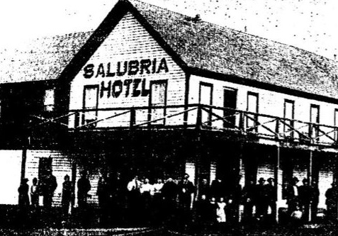

|  |
SalubriaBy Ron Marlow |
|
Salubria Hotel was the hub of the once thriving town along the Weiser river ... Cambridge has taken its place. In the late 1860's lumber and flour were produced in Salubria, which supplied the needs of area ranchers as well as miners at Warren and Florence. Mail came in twice a month from Falk's Store and Post Office on the Payette River. It was simply addressed to someone in "The Upper Valley." Residents decided they needed a post office and a name. Edward S. Jewells suggested the name "Salubria," because the area had a salubrious climate. The name was submitted to the postal department and it was accepted. As more settlers moved in, daily mail service was inaugurated. In the wake of Indian uprisings in the late 1870s a fort was built in Salubria. It was constructed of log walls set on a rock foundation - just a little northeast of the townsite. To serve the settlers down the valley, a small fort was erected on Mann's Creek on the old Galloway place. In 1884 the Oregon Short Line Railroad came through Weiser. Freight lines and stagecoaches were in business to go to the upper valley. Stages left Weiser in the early morning, stopped at Thorn Springs to change horses, and if the road was dry, you could be in Salubria by noon. In bad weather you could stay overnight at Thorn Springs, where food and lodging was available. Jim Parkes and Frank Ross were in charge at the station. The stage made a stop at the Salubria Hotel which had 17 bedrooms on the upper floor. Salubria's first newspaper was "The Idaho Citizen" printed in 1889. A fire destroyed the building. But it was rebuilt and the name was changed to "The Salubria Citizen." In 1900 the paper under editor Thomas Nelson, opened shop in Cambridge and the name was changed to "The Cambridge News." Pacific and Idaho Northern Railroad was built through the valley on the south side of the river, bypassing Salubria by miles. Cambridge had a railroad station and the town grew from business owners leaving Salubria. The last store was Smith's which closed its doors in 1920. This school closed, after 50 years of use and the students as well as those from Indian Valley and Cove Community, went to Cambridge foreign education. Area dentist U.M. Oven moved to Cambridge in 1900 to practice but, twice a year returned to his patients in Salubria where his dentist chair was set up in a corner of Mart Hannan's Saloon. Map makers don't show the community of Salubria on their maps anymore, but stories of the experiences of those early settlers are found in history books and told around campfires by descendents of pioneer families. |